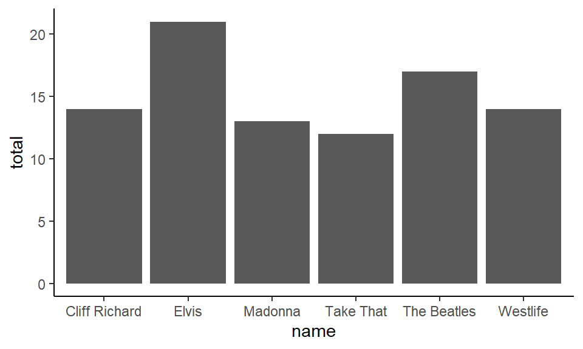
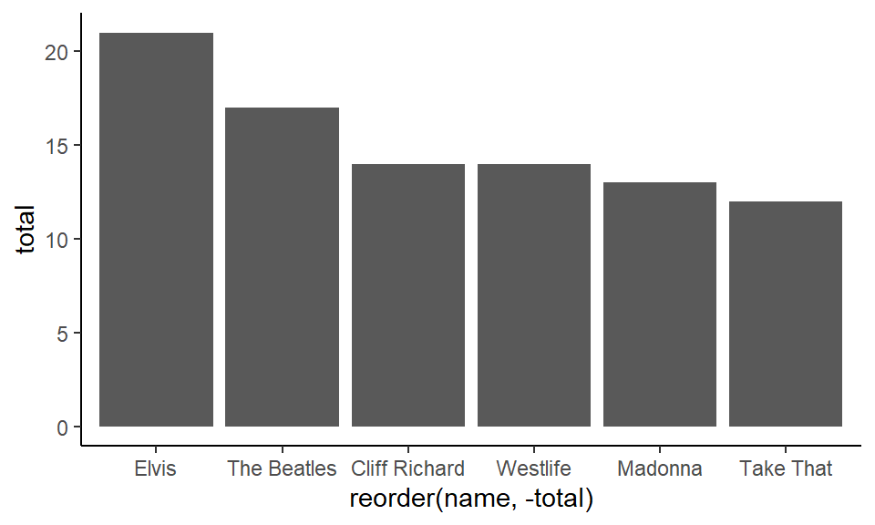
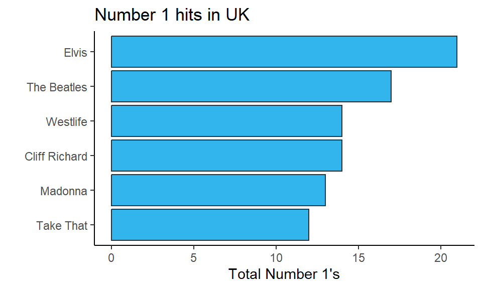
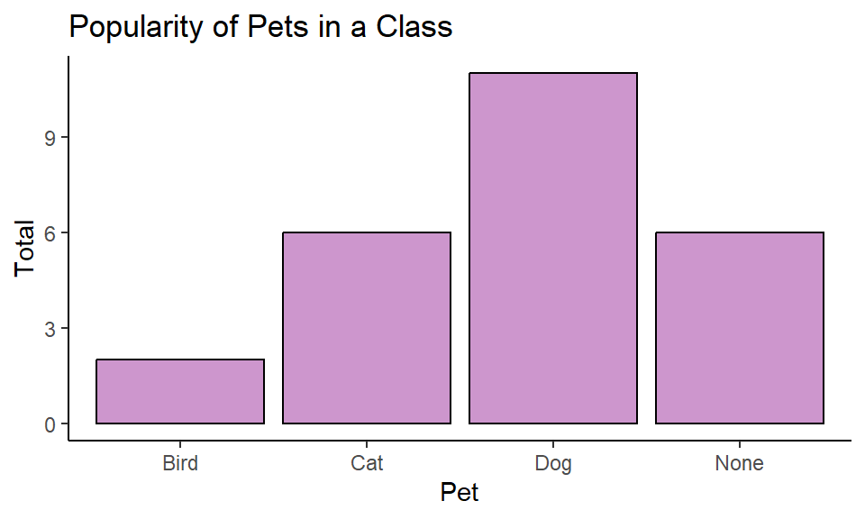

A common form of data that we wish to show are the amounts of different categories. Often these data could be presented in a table format. For instance, the table below shows the total number of number 1 hits by six different artists in the UK.
A table is a completely legitimate way to present data. A graphical way of presenting these same data would be to make a bar graph. In these plots we have a categorical grouping variable on the x-axis and a numerical value (either continuous or discrete) on the y-axis. An advantage of bar graphs over tables is that it is often easier to visualize the proportional differences between categories in their values when looking at a bar graph compared to a table. Bar graphs are therefore especially useful when the differences between groups are larger.
If we wish to make a bar graph using ggplot() our data may come in two different ways. First, we may already have the totals that we wish to plot - that is our dataset already contains the values that the bar heights will be at. Second, we may not have these counts but need R to calculate them for us. These two different initial data setups require different geoms to create bar graphs.
6.1geom_col()
Let’s first describe the situation when you have a dataset where you have already counted the number that applies to each group. We will use the number1s.csv data which contains the same data as the table above.
# A tibble: 6 x 2
name total
<chr> <dbl>
1 Elvis 21
2 The Beatles 17
3 Cliff Richard 14
4 Westlife 14
5 Madonna 13
6 Take That 12
When data look like this and you have one column that is the category (x = name) and one column containing the numerical data y = total, you can use geom_col().
ggplot(df1, aes(x = name, y = total) ) +geom_col() +theme_classic()

Notice that the default order is alphabetical. You can reorder by putting reorder around the x-axis column. If you put reorder(name, total) this is telling it to reorder the name variable by their respective increasing values of total:
ggplot(df1, aes(x =reorder(name, total), y = total) ) +geom_col() +theme_classic()
Alternatively, if you put reorder(name, -total), with the - sign in front of ‘total’, this is telling it to reorder the name variable by their respective decreasing values of total:
ggplot(df1, aes(x =reorder(name, -total), y = total) ) +geom_col() +theme_classic()

To change the color of the bars, you need to put fill= inside geom_col() as we are dealing with filling in a shape:
When changing color use ‘fill’ here because it’s a shape.
And, as per usual, all other customizations are acceptable, including rotating the chart using coord_flip():
ggplot(df1, aes(x =reorder(name, total), y = total) ) +geom_col(fill ="#32b5ed", color="#193642") +xlab("") +ylab("Total Number 1's") +ggtitle("Number 1 hits in UK") +theme_classic() +coord_flip()

In the code for this flipped bar graph, notice that we removed the - from next to -total when reordering. If we’d left it in, it would have plotted the bars in the opposite order. If you are unsure with your own data whether to use it or not - just see what happens with and without it. Bar graphs look better when the highest value is at the top.
One other key thing about bar graphs, is that they should technically start at 0. As you are visualizing amounts, it would be misleading to start the graph at e.g. 10 in the above example. That would distort the relationship of the length of the bars to each other. Some people extend this rule to all graphs, but this is a misconception. Often we don’t need to know where 0 is for boxplots for instance. However, it is generally important to know where 0 is for bar graphs if we wish to compare bars between groups.
6.2geom_bar()
Often we want to make bar graphs to visualize how many we have of each group, but we don’t yet know how many we have! For example, take the following dataset which is found in pets.csv.
pets <-read_csv("data_raw/pets.csv")head(pets)
# A tibble: 6 x 2
name pet
<chr> <chr>
1 Leon Cat
2 Lesley Dog
3 Devon Dog
4 Timothy Dog
5 Paul None
6 Jody Cat
These data show different individuals in a class in the name column and what their favorite pet is in the pet column. Perhaps we want to visualize which pets are the most popular. We’d like to get the total number of people who put ‘cat’ as their favorite, the total number of people that put ‘dog’ down and so on.
One quick way to visually inspect how many we have of each pet in the pet column is to use the function table():
table(pets$pet)
Bird Cat Dog None
2 6 11 6
To make the bar graph of these data using ggplot(), we need to use geom_bar(). Fortunately, geom_bar() counts how many we have of each for us. We do not need to supply a y column. We just need to supply x=pet to indicate that that column will be our grouping variable.
Once we have the basic plot down, all the other bits and pieces can be done:
Then just customize.
ggplot(pets, aes(x = pet)) +geom_bar(color="black", fill="plum3") +theme_classic()+xlab("Pet")+ylab("Total")+ggtitle("Popularity of Pets in a Class")

You can also reorder your factor. With geom_bar() we reorder in a similar way to how we did with geom_boxplot(). We use x = reorder(pet, pet, table) to tell it to reorder the pet category according to the frequency count of each as calculated by the table() function. Using coord_flip() makes it easier to read and compare bars.
ggplot(pets, aes(x =reorder(pet, pet, table))) +geom_bar(color="black", fill="plum3") +theme_classic()+xlab("Pet")+ylab("Total")+ggtitle("Popularity of Pets in a Class") +coord_flip()